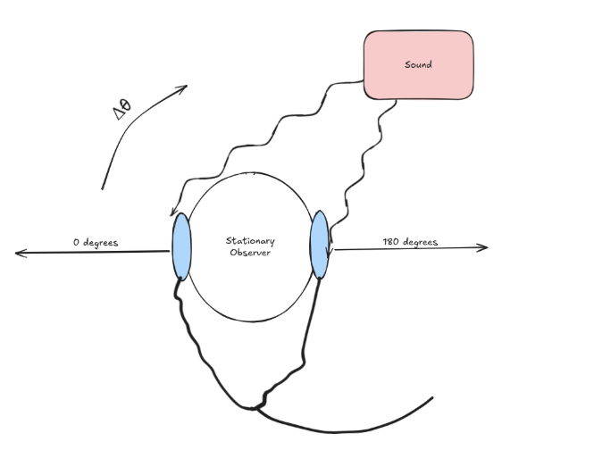
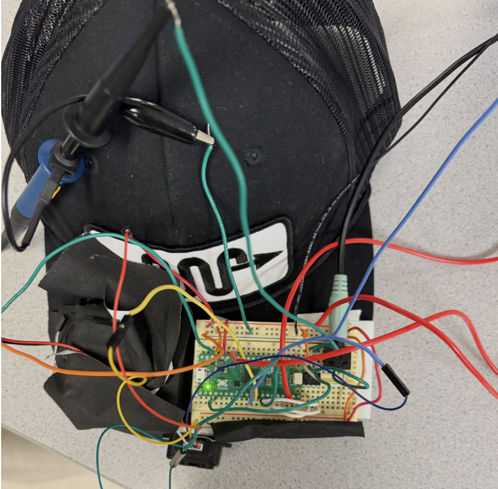
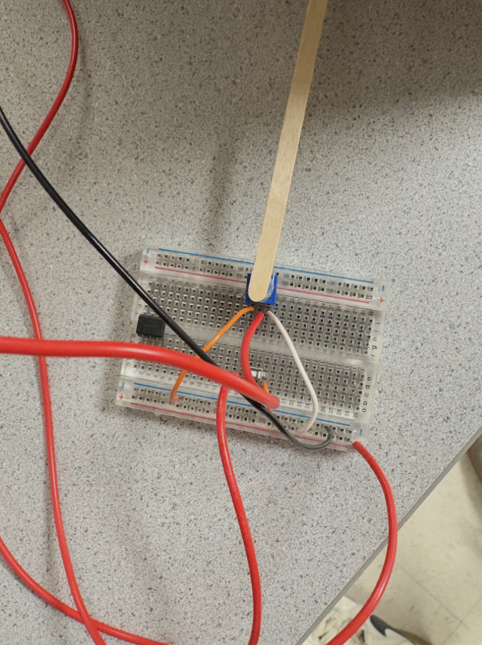
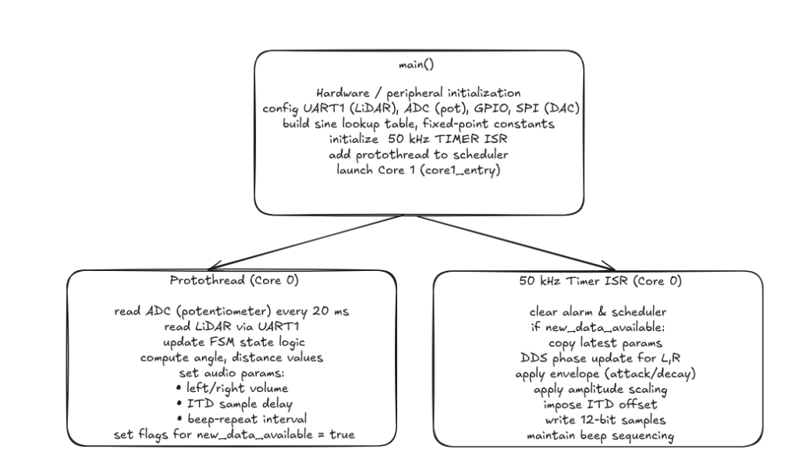

Spring 2025 ECE 4750 Final Project
By Anishka Raina (ar933), Arnav Shah (aks274), Yoon Kang (dk844)
May 16, 2025
We designed a head-mounted device that helps users perceive the direction and proximity of nearby objects using spatial audio cues. The system uses a TF-Luna LiDAR sensor for real-time distance measurement and a potentiometer to estimate head orientation. A Raspberry Pi Pico processes this data and generates directional audio using direct digital synthesis (DDS), output through a DAC and stereo audio jack. When the user presses a button to initiate a scan, the device identifies the closest obstacle and plays a tone that is louder in either the left or right ear to simulate direction, while pitch represents proximity. Our goal was to build a low-cost, embedded spatial perception system that could one day assist individuals with visual impairments.
The motivation for this project came from our interest in designing assistive technology that allows users to interact with their environment more intuitively. Spatial audio, already widely used in commercial technology like airpods, seemed like a good way for us to give real-time feedback in a wearable form. We were particularly interested in how we could combine multiple peripherals (UART for LiDAR communication, ADC for reading analog input from the potentiometer, SPI for audio output, and real-time computation) on a resource constrained platform like the Raspberry Pi Pico. While some past projects have implemented spatial audio, our approach stands out by integrating live object detection using LiDAR rather than using pre-recorded audio cues. This makes our system fully reactive to the user's environment. The spatial audio adjusts the amplitude and timing to simulate directionality, allowing users to identify object locations solely through sound and without need for visual input.
ITD measures the difference in the arrival time of a sound between both ears. If sound arrives from the left for example, the sound will take less time to propagate and reach the left ear compared to the time to reach the right ear. Our brains are able to pick up on this slight time delay which is on the order of tens to hundreds of microseconds. We can calculate this time delay using basic math where the time delay as a function of theta is given by the following: ITD(theta) = d/c * sin(theta), where d and c are constants corresponding to the distance between one’s ears and the speed of sound (343 m/s). In our project, we assume the distance between the ears is 18 cm. The angle theta corresponds to the offset from some reference point, which we initially take to be the direction corresponding to the 0 for the potentiometer.
To compute the angle values for the potentiometer, which is an analog sensor, we measured the raw ADC values from 0 to 4095 and then mapped that to an angle between 0 and 180 degrees (corresponding to head position) after clamping.
From the user’s perspective, they are required to ensure that they click the button to proceed to the next state in our FSM and also that the arrow on the potentiometer lines up with the direction their head is facing. There are four main states in our FSM. After the last button press, the system resets back to the initial state.
Once the user has mounted the hat and is holding the breadboard with the potentiometer, they can click the button to start the system. We begin in the INIT state. After the first button press, the system enters the SCAN state. Here, the user should remain stationary and rotate their head from 0 to 180 degrees, while ensuring the potentiometer direction lines up with their actual head direction. During this scan, the system collects LiDAR readings in 5-degree increments and records the angle of the closest object.
After the scan, the system transitions to the AUDIO DIRECTION state. In this state, the system uses interaural time differences to create the illusion that the tone is coming from the direction of the closest object. As the user turns their head, the perceived audio source changes, allowing them to identify where the object is using only sound cues.
After another button press, the user enters the AUDIO PROXIMITY state. In this state, the tone's frequency varies depending on how close the user is to the object. The beeps occur more frequently as the user gets closer, and less frequently as they move away, serving as a proximity alert. A final button press resets the system to the INIT state.
The user hears the beeps through headphones plugged into a stereo jack, which receives analog output from the DAC. The tones themselves are generated using Direct Digital Synthesis (DDS), allowing for flexible frequency and stereo control.
To our knowledge, our project does not infringe on any patents or trademarks. We used open-source libraries and sample code provided in this course's curriculum, specifically the DDS and DAC example from Lab 1. This code was modified to support stereo output and spatial audio behavior. The TF-Luna LiDAR and potentiometer were purchased from Adafruit and are based on components with publicly available datasheets and specifications.
We have 6 main parts in the hardware design of our project, as seen in the figure 3 above. It is the Raspberry Pi Pico, the DAC, the audio jack, the potentiometer, a button, and the TF-Luna LiDAR. The DAC, audio jack, potentiometer, and button were all parts we used in previous labs. However, the TF-Luna LiDAR was chosen for the purpose of finding the distance from the nearest object and our system. We decided on this specific edition since it could see up to 175 cm and was cheap and small enough to mount on our hat. In addition, we powered the system using a separate battery pack mounted on the hat, rather than relying on the Pico's USB connection, since the system must be mobile.
Our spatial audio perception system's hardware is divided into two main components: a hat-mounted unit for sensing and audio output, and a handheld controller for user input. This design allows for intuitive interaction while maintaining the core sensing and feedback mechanisms in a wearable format.
The heart of our system is the Raspberry Pi Pico microcontroller, which we mounted on a breadboard attached to a flat hat. The Pico's dual-core processor handles our real-time audio synthesis and sensor data processing needs efficiently. We utilized several of the Pico's GPIO pins for various functions: pins 8 and 9 for UART communication with the LiDAR, pins 10, 11, and 13 for SPI interface with the DAC, pin 28 for analog input from the potentiometer, and pin 14 for the pushbutton input.
On the hat, alongside the Pico, we mounted the TF-Luna LiDAR sensor. We positioned this compact distance measurement tool at the front of the cap, ensuring an unobstructed view for accurate object detection. The LiDAR connects to the Pico via UART, allowing for rapid, precise distance measurements crucial for our application. Also on the hat-mounted breadboard, we placed the dual-channel DAC and stereo audio jack, forming the core of our audio output system. This setup generates independent left and right audio channels, essential for creating the spatial audio effects that convey directional information to the user. The audio jack, connected to the DAC outputs, allows users to plug in standard headphones for an immersive audio experience. The system that was mounted on the hat can be seen below in figure 4.
The second major component of our hardware setup is the handheld controller. This consists of a separate breadboard housing a potentiometer and a pushbutton. The potentiometer, connected to the Pico's ADC input via a flexible wire, allows users to simulate head rotation by adjusting the "direction" they are facing. We mapped the potentiometer's position to angles between 0° and 180°, providing an intuitive way to test directional audio feedback without the complexity of actual head tracking at this stage of development. The pushbutton on the handheld unit enables users to cycle through different modes of operation, such as room scanning, directional audio feedback, and proximity-based audio cues. We implemented software debouncing in our main control loop to ensure reliable button presses and state changes. The system that acted as the handheld controller can be seen in figure 5 below.
Throughout the development process, we encountered several challenges. Balancing the weight distribution on the hat required careful placement of components, especially after adding the battery pack. We also had to ensure that the wires connecting the handheld unit to the hat-mounted system were long enough for comfortable use but not so long as to become unwieldy. This was something we had trouble customizing, as everyone has different heights. In the end, we had to just make the wires extremely long, thus not being able to make it as compact as we wanted. There were some initial audio quality issues, where noise was experienced. In addition, the headphones we used had a microphone attached to it, so we could not insert it all the way. However, these were addressed through careful grounding techniques and component placement on the hat-mounted breadboard.
Looking ahead, we've identified several areas for hardware improvement. If we were able to do this project for an entire semester, transitioning to a custom PCB design for both the hat-mounted unit and the handheld controller would have significantly reduced the system’s unwieldy nature and improved reliability. We also would have explored the integration of an IMU/magnetometer into the hat-mounted unit to replace the handheld potentiometer, enabling true head tracking for a more natural user experience. We actually tried to implement a magnetometer but failed due to the extreme noise in the lab. As such, the magnetometer readings were not accurate enough, thus not viable. Next time, perhaps an IMU could be used. More research could be done in this if anyone wishes to make a more compact and better designed version of our final project.
In conclusion, our current two-part hardware configuration successfully demonstrates the concept of using LiDAR and directional audio for object detection and localization in a wearable format, with an intuitive handheld control interface. While the prototype proves the viability of our approach, future iterations will focus on miniaturization, improved integration between the hat-mounted and handheld components, and enhanced sensor capabilities to transform this concept into a practical, everyday assistive device for spatial perception.
Our software implements a sophisticated spatial audio perception system using a TF-Luna LiDAR sensor, a potentiometer for simulating head rotation, and stereo audio output for directional feedback. The system runs on a Raspberry Pi Pico (RP2040) microcontroller and utilizes direct digital synthesis (DDS) for real-time audio generation. The software architecture incorporates multi-core processing, interrupt-driven control, and efficient data processing techniques to achieve responsive and accurate spatial audio feedback.

Upon startup, the main function orchestrates a series of initialization steps crucial for the system's operation. First, standard I/O is initialized using stdio_init_all(), enabling communication through the serial interface. The hardware components are then initialized, including UART for LiDAR communication, ADC for potentiometer input, SPI for DAC communication, and various GPIO pins for button input and LED output. A hardware timer is configured to trigger interrupts for audio sample generation at a 50 kHz sampling rate for audio output.
The system also initializes global variables and data structures, including a sine wave lookup table for efficient audio synthesis. Each entry in the table is a 15-bit fixed point value of a sine waveform scaled to the DAC range. This pre-computed table significantly reduces the computational load during real-time audio generation as it avoids doing floating point arithmetic in real time.
The RP2040's dual-core architecture is leveraged to distribute the computational load effectively. Core 0 handles the main control loop, sensor data acquisition, and audio synthesis. Core 1 is currently in a tight loop, reserved for future expansion of the system's capabilities. This setup allows for efficient task distribution and potential future enhancements.
A crucial component of our spatial audio perception system is the TF-Luna LiDAR sensor, which provides accurate distance measurements. The LiDAR communicates with the Raspberry Pi Pico via UART (Universal Asynchronous Receiver-Transmitter) protocol. Our getLidarData function handles the communication, data parsing, and error checking to ensure reliable distance readings. For initial testing, we used Python as it was much easier to implement UART. It took us a bit to read through the datasheet of the TF-Luna LiDAR sensor and figure out how exactly we should unpack the data given.
The TF-Luna sensor outputs data in a specific format: a 9-byte packet where the first two bytes are always 0x59 (frame header), followed by two bytes representing the distance, then two bytes for signal strength, and finally a checksum byte. Our function is designed to read and interpret this data structure.
The function begins by setting up a 9-byte buffer (temp) to store the incoming data. We use a timeout mechanism to prevent the function from hanging if data is not received. If the frame is not received in time, the function will return -1 indicating an error and proceed to clear the UART buffer. This ensures that the system will not be stalled in the event of a bug or faulty hardware connection with the sensor. The timeout is set to 10 milliseconds, which is ample time for the sensor to respond under normal conditions:
absolute_time_t timeout_time = make_timeout_time_ms(10);
The function then enters a loop, reading bytes from the UART buffer until either all 9 bytes are received or the timeout is reached:
while (bytes_read < 9 && absolute_time_diff_us(get_absolute_time(), timeout_time) > 0) {
if (uart_is_readable(uart_id)) {
temp[bytes_read] = uart_getc(uart_id);
bytes_read++;
}
}
Once the data is received, we perform several checks to ensure its validity. We verify that all 9 bytes were read before the timeout and we check that the first two bytes are both 0x59, confirming we have a valid frame header. If these conditions are met, we extract the distance data from the 3rd and 4th bytes of the packet:
if (bytes_read == 9 && temp[0] == 0x59 && temp[1] == 0x59) {
distance = temp[2] + (temp[3] << 8);
return (int16_t)distance;
}
The distance is stored in little-endian format, so we combine the bytes using bitwise operations. The lower byte (temp[2]) is added to the upper byte (temp[3]) shifted left by 8 bits. If the data is invalid or a timeout occurs, the function returns -1 to indicate an error. Additionally, it clears any remaining data in the UART buffer to prepare for the next reading:
else {
while(uart_is_readable(uart_id)) {
uart_getc(uart_id);
}
return -1;
}
This error handling is crucial for maintaining the reliability of our system. In the main control loop, we check for this error condition and handle it appropriately:
current_distance = getLidarData(UART1_ID);
// Update angle-distance map and min distance during scan
if (fsm_state == FSM_SCAN && current_angle >= 0.0f && current_distance >= 0) {
... // After this, continues on for different error-checking.
The returned distance is stored as a signed 16-bit integer in the current_distance variable. By implementing robust error checking and timeout mechanisms, we ensure that our system can handle various scenarios such as sensor disconnection, data corruption, or communication interruptions. This reliability is crucial for the accurate spatial representation in our audio feedback system.
The getLidarData function is called in our main control loop at regular intervals, allowing us to maintain an up-to-date understanding of the environment. The frequency of these calls is balanced to provide responsive updates without overwhelming the system's processing capabilities.
In the context of our spatial audio system, the distance data from the LiDAR is used to modulate both the frequency and amplitude of the audio feedback. Closer objects result in higher-pitched and louder sounds, while more distant objects produce lower-pitched and quieter sounds. This intuitive mapping allows users to perceive the spatial layout of their environment through audio cues.
To indicate the direction that the user is facing, we use a potentiometer where the direction of the arrow on the potentiometer is parallel to the user’s direction. As they rotate their head from left to right, they adjust the potentiometer accordingly to match up with the direction they are facing. The 12-bit values from the potentiometer were read via the ADC to represent the user’s viewing angle, ranging from 0 to 4095. These values were then mapped to angle values between 0 and 180 degrees. While the potentiometer has greater angular range, a person can only move their head from side to side, thus we implement clamping where if the adc_value was above or below a certain value, we simply clamped it at 0 or 180 degrees. This logic was implemented in the function map_value shown below. Each time we read from the ADC, we would call this function with the current ADC value:
current_angle = map_value(pot_value, 600, 3500, 0.0f, 180.0f);This yields a floating point value that corresponds to the viewing angle relative to 0 degrees as defined as the user turning their head all the way to the left.
The heart of our spatial audio perception system lies in the main control loop, implemented as a protothread (protothread_lidar_pot). This loop manages a Finite State Machine (FSM) that governs the system's behavior across different operational modes. The FSM consists of four distinct states: FSM_INIT, FSM_SCAN, FSM_AUDIO_DIRECTION, and FSM_AUDIO_PROXIMITY. Each state serves a specific purpose in the system's operation and utilizes LiDAR data in unique ways.
Figure 7 bove shows a helpful diagram describing the logic for transitioning between states.
1. FSM_INIT State:
This is the initial state of the system. In this state, the system is idle, waiting for user input to begin the scanning process. LiDAR data is not actively used in this state, but the system is ready to transition to the scanning state upon a button press.
2. FSM_SCAN State:
When the system enters this state, it begins a room scanning process. The purpose is to create a map of the surrounding environment. During this state, the system continuously reads LiDAR data and associates it with the current angle (simulated by the potentiometer). The user is expected to simultaneously rotate their head and adjust the potentiometer accordingly as they look from side to side for the closest object. As the loop runs, each new LiDAR distance reading is associated with the current potentiometer angle and stored in an array. With every iteration, this code segment updates an angle_distance_map array, which stores the minimum distance found for each 5-degree sector of the 180-degree scan in 180/5 = 37 buckets. It also keeps track of the overall minimum distance and its corresponding angle by continuously updating the corresponding variables min_distance and min_distance_angle. This scanning process continues for a set duration (5 seconds in our implementation).
3. FSM_AUDIO_DIRECTION State:
After the scan is complete, the system transitions to this state. Here, the system provides directional audio feedback based on the location of the nearest object found during the scan to point them towards it using spatial audio cues. The LiDAR data is used to continuously update the current distance as the user turns, which is compared to the minimum distance found during the scan. Our code calculates the angle difference between the current orientation and the direction of the nearest object. It then uses this difference to modulate the audio amplitude and interaural time difference (ITD), creating a spatial audio effect that indicates the object's direction.
We implemented a 10 degree dead zone where if the user is facing almost directly toward the object (within ±10 degrees), the system outputs no sound as expected to indicate correct alignment. If the user is off by more than 10 degrees, then a beeping tone is played in both ears using ITD to indicate the correct direction to turn using spatial audio cues
float itd_us = (angle_diff / 180.0f) * MAX_ITD_US;
itd_samples = (int)((fabsf(itd_us) / 20.0f) + 0.5f);
if (itd_samples > MAX_ITD_SAMPLES) itd_samples = MAX_ITD_SAMPLES;
if (angle_diff < 0) itd_samples = -itd_samples;
In the above logic, the angle_diff variable is normalized to the range between -180 and +180 degrees. If the difference is less than 10 degrees, then both channels are set to 0, as previously mentioned. But for larger differences, we compute the amplitude scale which varies between 0 and 1, corresponding to how far off-center the user is. This value is then multiplied by a base volume factor, VOLUME_SCALE and then converted to a 15-bit fixed point value for each ear’s amplitude scale. The ITD calculation then simulates the slight delay between ears. The MAX_ITD_US defines the maximum delay corresponding to a 180 degree angle viewing. The angle difference is scaled into a time offset itd_us which is converted to a discrete number of audio samples. The sign of the itd_samples variable indicates whether the object is to the right (negative) or to the left (positive), indicating which ear’s sound should be delayed.
Both of these adjustments ensure that if the nearest object is towards the left of the user for example. The left audio channel will play slightly earlier, mimicking how sound propagates to the observer. The system remains in this state until the user is done with their scan and is ready to proceed to the next state via another button press.
4. FSM_AUDIO_PROXIMITY State:
In the final state, the system provides audio feedback based on the proximity of objects. The LiDAR data is used to modulate the frequency of the audio beeps, with closer objects resulting in more frequent beeps. Our code calculates a normalized distance value, which is then used to determine the interval between audio beeps. Closer objects result in shorter intervals (more frequent beeps), while farther objects produce longer intervals (less frequent beeps).
Throughout all states, the LiDAR data (current_distance) is continuously updated and made available to the audio synthesis interrupt service routine via the new_data_available flag. This ensures that the audio feedback always reflects the most recent distance measurements, providing real-time responsiveness to changes in the environment.
The main control loop's structure allows for us to manage each state in the FSM and easily transition between them. By processing LiDAR data differently in each state, we could create a versatile system that can provide both directional and proximity-based spatial audio feedback, enhancing the user's perception of their surroundings.
In our implementation, we set the lower_dist_bound and upper_dist_bound to define the bounds within which the beeps occur. This clamping is necessary because our LiDAR sensor is capable of sensing far objects, several feet away and we want to ensure that the frequency at which the beeps occur is reasonable and not too frequent or infrequent due to sensing an object too close or too far away. Thus, as the user approaches the object, the time between beeps (BEEP_REPEAT_INTERVAL) shrinks towards a minimum threshold and provides faster feedback.
The audio synthesis in our system is a critical component that translates the LiDAR distance data and orientation information into meaningful auditory feedback. We implement this using Direct Digital Synthesis (DDS) techniques, managed by a timer interrupt service routine (ISR). This approach allows for precise control over the audio output, enabling us to create spatial audio effects that convey both directional and proximity information.
The core of our audio synthesis is implemented in the alarm_irq function, which is triggered at a rate of 50 kHz (every 20 microseconds). This high update rate ensures smooth audio output and allows for fine-grained control over the audio parameters.
In order to implement the DDS, we used a phase accumulator method for generating sine waves. The phase accumulator is a 32-bit fixed point counter that we increment by a fixed amount every sample to generate a certain frequency. In the code snippet below , phase_accum_main_0 >> 24 takes the 8 most significant bits of the 32 bit phase and uses it to index the 256 entry sine lookup table. This sine lookup then returns a waveform value which is then multiplied by a current amplitude and a left and right amplitude scaling factor. These multiplications all involve fixed point arithmetic using multifix15() and then converted into an integer for the DAC. This is essential as we avoid using floating point arithmetic for the waveform by doing this inside the ISR, which makes the interrupt routine efficient.
phase_accum_main_0 += phase_incr_main_0;
int current_sample = fix2int15(multfix15(multfix15(current_amplitude_0, left_amplitude_scale), sin_table[phase_accum_main_0 >> 24]));
The phase_incr_main_0 determines the frequency of the generated tone. By adjusting this value, we can change the pitch of the audio feedback to indicate different distances or directions. In order to shape and manipulate the amplitudes for smooth audio transitions, we implemented an attack and decay envelope for each beep. Our code gradually increases the amplitude during the attack phase and decreases it during the decay phase, creating a more natural-sounding beep.
In order to create an “illusion” of directional sound, we employed two main techniques: amplitude panning and interaural time difference (ITD).
For amplitude panning, we adjusted the relative amplitudes of the left and right audio channels based on the angle difference between the user's orientation and the object's direction. Lastly, we implemented a proximity-based audio modulation, where we modulate the beep repeat interval based on the object's distance. This created a "sonar-like" effect where closer objects result in more frequent beeps.
To ensure efficient real-time performance in our project, we employed several optimization techniques, including fixed-point arithmetic and a pre-computed sine table. This ensured that our code was faster, thus lowering the delays between the audio synthesis as well as the beeps. It also ensured that our ITD worked perfectly.
While we were able to achieve the initial goals we set out in completing this project, there were a few features or enhancements that we could have added. Currently, we focus solely on the nearest object found in the scan. However, we maintain an array which maps distances to ‘angle buckets’ where at every 5 degrees, it stores the closest object at that angle. In a future version, we could have it so that our system would proceed to locate the 2nd closest or third closest objects as well in addition to our current implementation with the closest. Also, we could implement ILD as well where the volume in one ear is reduced and increased in the other depending on the direction to enhance the spatial resolution. This would complement the ITD well by providing another audio cue.
Throughout the design process, we employed various testing and debugging strategies. Each major component was tested individually, and integration tests were performed as components were combined. Strategic print statements were added for monitoring system behavior by using UART0 of the debugger. By looking at the serial monitor, we could deduce whether the LiDAR was working properly, whether the FSM states were being transitioned with every button click, and whether the correct values were being stored in terms of minimum distance, and the minimum distance angle.
Besides this, we also used the oscilloscope many times to ensure the ITD was working. We had to make sure that the start of each wave was shifted, instead of having just a phase shift. We had some trouble debugging this aspect, but managed to do it correctly after putting everything in the alarm_irq function. This ensured that all the calculations were being done in the same function, thus allowing quick phase shifting in accordance to the start times of the left and right audio functions.
To make sure our spatial audio was working correctly, we hooked up both audio channels to an oscilloscope to check for interaural time differences (ITD). The waveforms showed the expected timing offset between the left and right channels depending on which side the closest object was on. In the oscilliscope readings, the top trace (Channel 1) corresponds to the left audio channel, and the bottom trace (Channel 2) is the right. In figure 8, Channel 1 clearly leads Channel 2, which simulates a sound arriving from the user's left. In figure 9, Channel 1 is slightly behind Channel 2, showing the effect when the object is to the right. This time offset between channels is how we simulate interaural time difference (ITD), and the waveforms here give a solid visual confirmation that our timing logic works.
Overall, the system was responsive and worked reliably. Button presses were consistently detected thanks to our debounce logic, and scanning kicked off right away after a press. During scans, we gathered LiDAR readings about every 20 milliseconds, which gave us solid resolution across the 180-degree sweep. Audio playback stayed smooth, with both channels being updated at the same time in the shared timer interrupt, which helped avoid any weird concurrency issues. Beep pitch and volume also updated quickly based on how close the user was to the object.
To check how accurate our direction cues were, we had people try to guess which direction the sound was coming from. Most of the time, they were able to tell if it was coming from the left, right, or straight ahead, which means our amplitude scaling and ITD logic were doing their job.
We kept safety in mind throughout the build. Everything runs on low voltage, and all exposed wires were either insulated or securely connected to the Pico to avoid accidental shorts. The LiDAR sensor itself uses infrared light, which is eye-safe. On the usability side, we tried to make the system as simple and hands-free as possible. The user just presses a button to start scanning and listens to the audio through headphones—no other interaction is needed during use. One small tweak that made a big difference was adding a coffee stirrer to the potentiometer knob. The tiny blue arrow it came with was hard to see once the hat was on, so the stirrer acts as a much more obvious pointer. This made it way easier to tell which direction the potentiometer was facing during the scan and improved the overall experience.
Our final system successfully met our expectations in simulating spatial awareness through real-time audio feedback. The combination of LiDAR sensing, potentiometer-based head tracking, and stereo DDS audio allowed users to detect both the direction and proximity of nearby objects. The project had good execution and ease of usability, especially after iterating on small design elements like the potentiometer pointer.
If we were to continue this project, we would expand beyond just the nearest object. We could overlay the second and third closest objects to generate a full spatial audio “map” of the environment. This would provide users with a richer and more immersive spatial understanding.
In terms of standards and intellectual property, our design followed safety best practices and used only publicly available components and code. Some portions of our audio synthesis and SPI communication were adapted from the RP2040 lab examples.
The group approves this report for inclusion on the course website.
The group approves the video for inclusion on the course youtube channel.
#include
#include
#include
#include
#include "pico/stdlib.h"
#include "pico/multicore.h"
#include "hardware/uart.h"
#include "hardware/gpio.h"
#include "hardware/adc.h"
#include "hardware/spi.h"
#include "hardware/timer.h"
#include "hardware/sync.h"
#include "pt_cornell_rp2040_v1_3.h"
// === Fixed Point Macros ===
typedef signed int fix15;
#define multfix15(a,b) ((fix15)((((signed long long)(a))*((signed long long)(b)))>>15))
#define float2fix15(a) ((fix15)((a)*32768.0))
#define fix2float15(a) ((float)(a)/32768.0)
#define int2fix15(a) ((fix15)(a << 15))
#define fix2int15(a) ((int)(a >> 15))
#define divfix(a,b) (fix15)( (((signed long long)(a)) << 15) / (b))
// === UART Configuration ===
#define UART0_ID uart0
#define UART1_ID uart1
#define BAUD_RATE 115200
#define UART0_TX_PIN 0
#define UART0_RX_PIN 1
#define UART1_TX_PIN 8
#define UART1_RX_PIN 9
// === ADC Configuration ===
#define POT_PIN 28
// === Button Configuration ===
#define BUTTON_PIN 14
// === SPI/DAC Configuration ===
#define PIN_CS 13
#define PIN_SCK 10
#define PIN_MOSI 11
#define LDAC 2
#define SPI_PORT spi1
#define DAC_config_chan_A 0b0011000000000000
#define DAC_config_chan_B 0b1011000000000000
#define SPI_LOCK_NUM 0
spin_lock_t *spi_lock;
// === Audio Synthesis (DDS) Configuration ===
#define two32 4294967296.0
#define Fs 50000
#define DELAY 20
#define sine_table_size 256
fix15 sin_table[sine_table_size];
// === DDS Synthesis - Left Ear ===
volatile unsigned int phase_accum_main_0;
volatile unsigned int phase_incr_main_0 = (400.0*two32)/Fs;
volatile fix15 current_amplitude_0 = 0;
volatile fix15 left_amplitude_scale = int2fix15(1);
uint16_t DAC_data_0;
volatile int DAC_output_0;
// === DDS Synthesis - Right Ear ===
volatile unsigned int phase_accum_main_1;
volatile unsigned int phase_incr_main_1 = (400.0*two32)/Fs;
volatile fix15 current_amplitude_1 = 0;
volatile fix15 right_amplitude_scale = int2fix15(1);
uint16_t DAC_data_1;
volatile int DAC_output_1;
// === Beep Envelope Timing ===
#define ATTACK_TIME 250
#define DECAY_TIME 250
#define BEEP_DURATION 10500
#define MIN_BEEP_INTERVAL 15000
volatile uint32_t BEEP_REPEAT_INTERVAL = MIN_BEEP_INTERVAL;
// === Amplitude Control ===
fix15 max_amplitude = int2fix15(1);
fix15 attack_inc;
fix15 decay_inc;
#define VOLUME_SCALE 0.5f
// === Distance to Amplitude Mapping ===
#define MIN_DIST_VOL 20
#define MAX_DIST_VOL 200
#define MAX_CLOSER_DIST 50 // Max distance (cm) closer than min_distance for max beep frequency
// === Timer Alarms for ISR ===
#define ALARM_NUM 0
#define ALARM_IRQ TIMER_IRQ_0
#define ISR_GPIO 15
// === Lidar/Angle Mapping ===
#define ANGLE_BUCKETS 37
uint16_t angle_distance_map[ANGLE_BUCKETS];
volatile uint16_t min_distance = UINT16_MAX;
volatile float min_distance_angle = -1.0f;
// === LED Configuration ===
#define LED 25
// === FSM States ===
#define FSM_INIT 0
#define FSM_SCAN 1
#define FSM_AUDIO_DIRECTION 2
#define FSM_AUDIO_PROXIMITY 3
volatile int fsm_state = FSM_INIT;
// === Interaural Time Difference ===
#define MAX_ITD_US 490.0f
#define MAX_ITD_SAMPLES 25
volatile int itd_samples = 0;
volatile uint32_t beep_counter = 0;
volatile bool left_active = false;
volatile bool right_active = false;
volatile uint32_t left_beep_duration = 0;
volatile uint32_t right_beep_duration = 0;
volatile bool beep_cycle_complete = true;
// === Global variables for communication between protothread and ISR ===
volatile float current_angle = 0.0f;
volatile int16_t current_distance = 0;
volatile bool new_data_available = false;
// Function Prototypes
int16_t getLidarData(uart_inst_t *uart_id);
float map_value(uint16_t value, uint16_t in_min, uint16_t in_max, float out_min, float out_max);
static void alarm_irq(void);
void core1_entry();
// === Lidar Data Acquisition Function ===
int16_t getLidarData(uart_inst_t *uart_id) {
uint8_t temp[9];
int bytes_read = 0;
uint16_t distance = UINT16_MAX;
absolute_time_t timeout_time = make_timeout_time_ms(10);
// Read 9 bytes from UART with timeout
while (bytes_read < 9 && absolute_time_diff_us(get_absolute_time(), timeout_time) > 0) {
if (uart_is_readable(uart_id)) {
temp[bytes_read] = uart_getc(uart_id);
bytes_read++;
}
}
// Check if valid data was received
if (bytes_read == 9 && temp[0] == 0x59 && temp[1] == 0x59) {
distance = temp[2] + (temp[3] << 8);
return (int16_t)distance;
} else {
// Clear UART buffer if invalid data
while(uart_is_readable(uart_id)) {
uart_getc(uart_id);
}
return -1;
}
}
// === Angle Mapping Helper Function ===
float map_value(uint16_t value, uint16_t in_min, uint16_t in_max, float out_min, float out_max) {
if (value < in_min) value = in_min;
if (value > in_max) value = in_max;
return (float)(value - in_min) * (out_max - out_min) / (float)(in_max - in_min) + out_min;
}
// === Timer ISR for both channels ===
static void alarm_irq(void) {
gpio_put(ISR_GPIO, 1);
// Clear the interrupt and set next alarm
hw_clear_bits(&timer_hw->intr, 1u << ALARM_NUM);
timer_hw->alarm[ALARM_NUM] = timer_hw->timerawl + DELAY;
beep_counter++;
// FSM logic
if (new_data_available) {
new_data_available = false;
if (fsm_state == FSM_AUDIO_DIRECTION) {
// Calculate angle difference and apply spatial audio effects
float angle_diff = current_angle - min_distance_angle;
if (angle_diff > 180.0f) angle_diff -= 360.0f;
else if (angle_diff < -180.0f) angle_diff += 360.0f;
float abs_angle_diff = fabsf(angle_diff);
if (abs_angle_diff <= 10.0f) {
left_amplitude_scale = 0;
right_amplitude_scale = 0;
itd_samples = 0;
} else {
float amplitude_scale = (abs_angle_diff - 10.0f) / 170.0f;
amplitude_scale = amplitude_scale * amplitude_scale;
float volume = VOLUME_SCALE * amplitude_scale;
float itd_us = (angle_diff / 180.0f) * MAX_ITD_US;
itd_samples = (int)((fabsf(itd_us) / 20.0f) + 0.5f);
if (itd_samples > MAX_ITD_SAMPLES) itd_samples = MAX_ITD_SAMPLES;
if (angle_diff < 0) itd_samples = -itd_samples;
left_amplitude_scale = float2fix15(volume);
right_amplitude_scale = float2fix15(volume);
}
BEEP_REPEAT_INTERVAL = BEEP_DURATION + MAX_ITD_SAMPLES + MIN_BEEP_INTERVAL;
phase_incr_main_0 = (uint32_t)((400.0 * two32) / Fs);
phase_incr_main_1 = (uint32_t)((400.0 * two32) / Fs);
}
else if (fsm_state == FSM_AUDIO_PROXIMITY) {
// Set up proximity-based audio feedback
left_amplitude_scale = float2fix15(VOLUME_SCALE);
right_amplitude_scale = float2fix15(VOLUME_SCALE);
itd_samples = 0; // No ITD in proximity mode
// Calculate normalized distance and map to beep interval
float current_dist_f = (float)current_distance;
float min_dist_f = (float)min_distance;
float lower_dist_bound = min_dist_f - MAX_CLOSER_DIST;
if (lower_dist_bound < MIN_DIST_VOL) {
lower_dist_bound = MIN_DIST_VOL;
}
float upper_dist_bound = min_dist_f;
float clamped_relative_dist = current_dist_f;
if (clamped_relative_dist < lower_dist_bound) {
clamped_relative_dist = lower_dist_bound;
}
if (clamped_relative_dist > upper_dist_bound) {
clamped_relative_dist = upper_dist_bound;
}
if (upper_dist_bound > lower_dist_bound) {
float normalized_dist = (clamped_relative_dist - lower_dist_bound) / (upper_dist_bound - lower_dist_bound);
const uint32_t MIN_ALLOWED_INTERVAL_PROXIMITY = BEEP_DURATION + 5000;
const uint32_t MAX_DESIRED_INTERVAL = 60000; // ~1.2s max interval
const uint32_t INTERVAL_RANGE = MAX_DESIRED_INTERVAL - MIN_ALLOWED_INTERVAL_PROXIMITY;
BEEP_REPEAT_INTERVAL = MIN_ALLOWED_INTERVAL_PROXIMITY + (uint32_t)(INTERVAL_RANGE * normalized_dist);
} else {
const uint32_t MAX_DESIRED_INTERVAL = 60000;
BEEP_REPEAT_INTERVAL = MAX_DESIRED_INTERVAL;
}
}
else {
// Default state: no audio
left_amplitude_scale = 0;
right_amplitude_scale = 0;
itd_samples = 0;
}
}
// Start a new beep cycle if previous one is complete and interval has passed
if (beep_cycle_complete && beep_counter >= BEEP_REPEAT_INTERVAL) {
beep_counter = 0;
left_active = false;
right_active = false;
current_amplitude_0 = 0;
current_amplitude_1 = 0;
phase_accum_main_0 = 0;
phase_accum_main_1 = 0;
left_beep_duration = 0;
right_beep_duration = 0;
beep_cycle_complete = false;
}
// Left channel processing
if (beep_counter >= (itd_samples > 0 ? itd_samples : 0)) {
left_active = true;
}
if (left_active) {
// Generate and process left channel audio
phase_accum_main_0 += phase_incr_main_0;
int current_sample = fix2int15(multfix15(multfix15(current_amplitude_0, left_amplitude_scale),
sin_table[phase_accum_main_0 >> 24]));
DAC_output_0 = current_sample + 2048;
// Clamp DAC output
if (DAC_output_0 > 4095) DAC_output_0 = 4095;
else if (DAC_output_0 < 0) DAC_output_0 = 0;
// Apply envelope
if (left_beep_duration < ATTACK_TIME) {
current_amplitude_0 += attack_inc;
if (current_amplitude_0 > max_amplitude) current_amplitude_0 = max_amplitude;
}
else if (left_beep_duration >= (BEEP_DURATION - DECAY_TIME)) {
if (current_amplitude_0 > decay_inc) {
current_amplitude_0 -= decay_inc;
} else {
current_amplitude_0 = 0;
}
}
// Prepare DAC data and send to SPI
DAC_data_0 = (DAC_config_chan_B | (DAC_output_0 & 0xFFF));
spin_lock_unsafe_blocking(spi_lock);
spi_write16_blocking(SPI_PORT, &DAC_data_0, 1);
spin_unlock_unsafe(spi_lock);
left_beep_duration++;
} else {
// Output silence when not active
DAC_data_0 = (DAC_config_chan_B | 2048);
spin_lock_unsafe_blocking(spi_lock);
spi_write16_blocking(SPI_PORT, &DAC_data_0, 1);
spin_unlock_unsafe(spi_lock);
}
// Right channel processing (similar to left channel)
if (beep_counter >= (itd_samples < 0 ? -itd_samples : 0)) {
right_active = true;
}
if (right_active) {
// Generate and process right channel audio
phase_accum_main_1 += phase_incr_main_1;
int current_sample = fix2int15(multfix15(multfix15(current_amplitude_1, right_amplitude_scale),
sin_table[phase_accum_main_1 >> 24]));
DAC_output_1 = current_sample + 2048;
// Clamp DAC output
if (DAC_output_1 > 4095) DAC_output_1 = 4095;
else if (DAC_output_1 < 0) DAC_output_1 = 0;
// Apply envelope
if (right_beep_duration < ATTACK_TIME) {
current_amplitude_1 += attack_inc;
if (current_amplitude_1 > max_amplitude) current_amplitude_1 = max_amplitude;
}
else if (right_beep_duration >= (BEEP_DURATION - DECAY_TIME)) {
if (current_amplitude_1 > decay_inc) {
current_amplitude_1 -= decay_inc;
} else {
current_amplitude_1 = 0;
}
}
// Prepare DAC data and send to SPI
DAC_data_1 = (DAC_config_chan_A | (DAC_output_1 & 0xFFF));
spin_lock_unsafe_blocking(spi_lock);
spi_write16_blocking(SPI_PORT, &DAC_data_1, 1);
spin_unlock_unsafe(spi_lock);
right_beep_duration++;
} else {
// Output silence when not active
DAC_data_1 = (DAC_config_chan_A | 2048);
spin_lock_unsafe_blocking(spi_lock);
spi_write16_blocking(SPI_PORT, &DAC_data_1, 1);
spin_unlock_unsafe(spi_lock);
}
// Check if both channels have completed their beep
if (left_beep_duration >= BEEP_DURATION && right_beep_duration >= BEEP_DURATION) {
beep_cycle_complete = true;
}
gpio_put(ISR_GPIO, 0);
}
// === Protothread for Lidar/Potentiometer ===
static PT_THREAD (protothread_lidar_pot(struct pt *pt))
{
PT_BEGIN(pt);
static uint64_t last_print_time = 0;
static float zero_angle = 90.0f;
static bool scanning = false;
static uint32_t scan_start_time = 0;
static const uint32_t SCAN_DURATION = 5000000; // 5 seconds in microseconds
static uint32_t last_button_time = 0;
static const uint32_t DEBOUNCE_TIME = 200000; // 200ms debounce time
while(1) {
// Handle button press with debounce
if (!gpio_get(BUTTON_PIN)) { // Button is active low
uint32_t current_time = PT_GET_TIME_usec();
if (current_time - last_button_time > DEBOUNCE_TIME) {
last_button_time = current_time;
// State transition logic
switch(fsm_state) {
case FSM_INIT:
fsm_state = FSM_SCAN;
scanning = true;
scan_start_time = current_time;
min_distance = UINT16_MAX;
min_distance_angle = -1.0f;
printf("Starting room scan...\n");
break;
case FSM_SCAN:
fsm_state = FSM_AUDIO_DIRECTION;
printf("Scan complete. Starting directional audio. Minimum distance angle: %.1f\n", min_distance_angle);
break;
case FSM_AUDIO_DIRECTION:
fsm_state = FSM_AUDIO_PROXIMITY;
zero_angle = min_distance_angle; // Set object angle as new zero point
printf("Setting new zero point at %.1f degrees. Entering proximity mode.\n", zero_angle);
break;
case FSM_AUDIO_PROXIMITY:
fsm_state = FSM_INIT;
printf("Cycling back to initial state.\n");
break;
}
}
}
// Read potentiometer and calculate angle
uint16_t pot_value = adc_read();
current_angle = map_value(pot_value, 600, 3500, 0.0f, 180.0f);
// Read Lidar
current_distance = getLidarData(UART1_ID);
// Update angle-distance map and min distance during scan
if (fsm_state == FSM_SCAN && current_angle >= 0.0f && current_distance >= 0) {
int angle_index = (int)roundf(current_angle / 5.0f);
if (angle_index < 0) angle_index = 0;
if (angle_index >= ANGLE_BUCKETS) angle_index = ANGLE_BUCKETS - 1;
angle_distance_map[angle_index] = (uint16_t)current_distance;
if ((uint16_t)current_distance < min_distance) {
min_distance = (uint16_t)current_distance;
min_distance_angle = current_angle;
}
}
// Handle scanning state
if (scanning) {
if (PT_GET_TIME_usec() - scan_start_time >= SCAN_DURATION) {
scanning = false;
printf("Scan complete. Closest object at %.1f degrees, %d cm. Press button to start audio.\n", min_distance_angle, min_distance);
}
}
// Signal that new data is available for the ISR
new_data_available = true;
// Print debug information
uint64_t current_time_us = PT_GET_TIME_usec();
if (current_time_us - last_print_time >= 5000000) {
printf("--- State: %d | Min Dist: %d cm at ~%.1f deg ---\n", fsm_state, min_distance, min_distance_angle);
last_print_time = current_time_us;
} else if (current_angle >= 0.0f && current_distance >= 0) {
printf("State: %d | Current Angle: %.1f deg | Min Dist Angle: %.1f deg | Dist: %d cm | Left Amp: %.2f | Right Amp: %.2f | ITD: %d | Interval: %d\n",
fsm_state, current_angle, min_distance_angle, current_distance,
fix2float15(left_amplitude_scale), fix2float15(right_amplitude_scale),
itd_samples, BEEP_REPEAT_INTERVAL);
}
PT_YIELD_usec(20000);
}
PT_END(pt);
}
// === Core 1 Entry Point ===
void core1_entry() {
while(1){
tight_loop_contents();
}
}
// === Core 0 Main Entry Point ===
int main() {
stdio_init_all();
printf("Multicore Lidar/Potentiometer Audio Feedback System Initializing...\n");
// Initialize Hardware
gpio_init(LED);
gpio_set_dir(LED, GPIO_OUT);
gpio_put(LED, 0);
adc_init();
adc_gpio_init(POT_PIN);
adc_select_input(2);
uart_init(UART0_ID, BAUD_RATE);
uart_init(UART1_ID, BAUD_RATE);
gpio_set_function(UART0_TX_PIN, GPIO_FUNC_UART);
gpio_set_function(UART0_RX_PIN, GPIO_FUNC_UART);
gpio_set_function(UART1_TX_PIN, GPIO_FUNC_UART);
gpio_set_function(UART1_RX_PIN, GPIO_FUNC_UART);
spi_init(SPI_PORT, 20000000);
spi_set_format(SPI_PORT, 16, 0, 0, 0);
gpio_set_function(PIN_SCK, GPIO_FUNC_SPI);
gpio_set_function(PIN_MOSI, GPIO_FUNC_SPI);
gpio_init(PIN_CS);
gpio_set_dir(PIN_CS, GPIO_OUT);
gpio_put(PIN_CS, 1);
gpio_set_function(PIN_CS, GPIO_FUNC_SPI);
gpio_init(LDAC);
gpio_set_dir(LDAC, GPIO_OUT);
gpio_put(LDAC, 0);
gpio_init(ISR_GPIO);
gpio_set_dir(ISR_GPIO, GPIO_OUT);
gpio_put(ISR_GPIO, 0);
gpio_init(BUTTON_PIN);
gpio_set_dir(BUTTON_PIN, GPIO_IN);
gpio_pull_up(BUTTON_PIN);
// Initialize Synthesis Data
for (int ii = 0; ii < sine_table_size; ii++){
sin_table[ii] = float2fix15(2047.0 * sin((float)ii * 2.0 * M_PI / (float)sine_table_size));
}
attack_inc = (ATTACK_TIME > 0) ? divfix(max_amplitude, int2fix15(ATTACK_TIME)) : max_amplitude;
decay_inc = (DECAY_TIME > 0) ? divfix(max_amplitude, int2fix15(DECAY_TIME)) : max_amplitude;
for (int i = 0; i < ANGLE_BUCKETS; i++) {
angle_distance_map[i] = UINT16_MAX;
}
// Setup Timer ISR
hw_set_bits(&timer_hw->inte, 1u << ALARM_NUM);
irq_set_exclusive_handler(ALARM_IRQ, alarm_irq);
irq_set_enabled(ALARM_IRQ, true);
timer_hw->alarm[ALARM_NUM] = timer_hw->timerawl + DELAY;
// Setup Protothreads
pt_add_thread(protothread_lidar_pot);
// Launch Core 1
multicore_launch_core1(core1_entry);
sleep_ms(10);
// Start Core 0 Scheduler
printf("Core 0: Starting Protothread Scheduler...\n");
gpio_put(LED, 1);
pt_schedule_start;
return 0;
}
Total Cost: ~$65.25
Yoon worked on setting up the hardware system and transferring all the components onto the wearable hat. He also implemented the interaural time difference (ITD) logic that enabled directional audio feedback. Arnav focused on configuring the sensors and writing the logic for the FSM state transitions in the main control loop. Anishka also contributed to sensor configuration and assisted with implementing portions of the system code. Together, we collaborated on testing, debugging, and refining the final system together. We peer programmed much of the audio feedback logic and collectively worked on writing and editing the website.